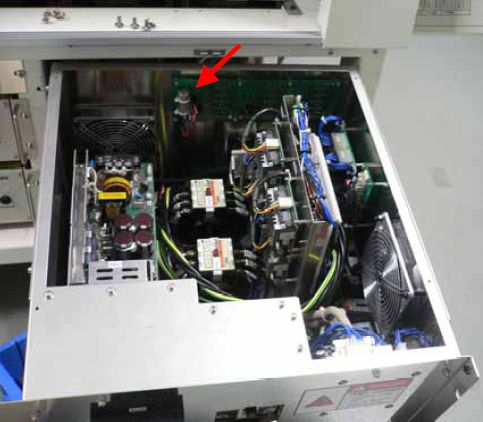
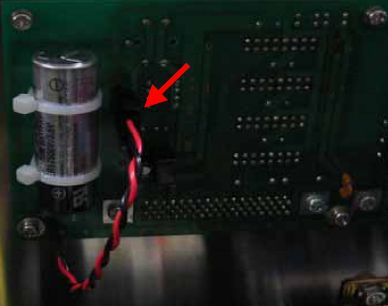

Service History
Subject: TR60 Absolute Encoder Battery Alarm
Handler Model: TR60 (S/N:121175) NEC
Controller: RC520 ( S/N: 01-20947) 3 DU
Date: 3 Aug 2008
Symptom
Alarm : F 5018 Absolute Encoder Battery Alarm
Description : The encoder detected that the battery voltage is lower than the encoder's lowest detectable range [ 2.6V - 2.8V ].
Check on the battery voltage ( 3.6V typ. )
Replace the battery.
Check on the signal cable and connectors.
This alarm happened on every unit ( Input Arm, Test Arm, Output Arm,... )
Action
Main Power Box PSUNT 296 is where the lithium battery(for servo motors) is located.
|
 |
 |
Item: Lithium Battery (Connector ASSY)
Spec: ER17500VLY ASSY
Code: R35N700002100
Cause
Lithium battery in Main power box was flat.
Remarks
Refer 0021-TR60 on initialise encoder and motor calibration.
Ensure Front Operation Panel is Power On so that 5Vdc can charge motor's encoder.
For NS-7000 series, the Lithium battery for encoder is located on each bifurcated board in Drive Unit.
For NS-6000 series, there is no Lithium battery for encoder, as incremental motors are used.
According to the battery maker, Lithium battery estimate life is about 5 years by normal usage.
However, we are suggesting the estimate life is approximately 3 years for the lithium battery.
Because, it depends on the usage situation.